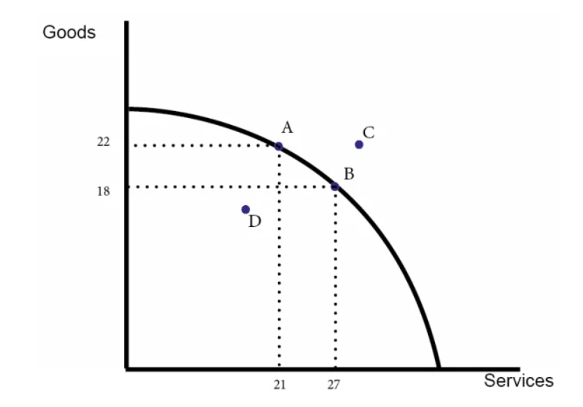
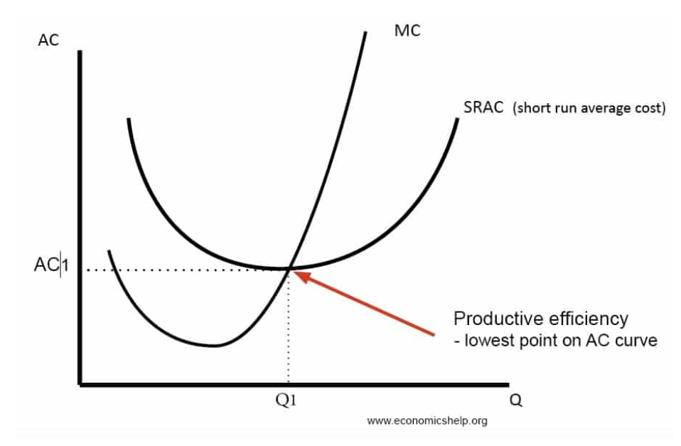
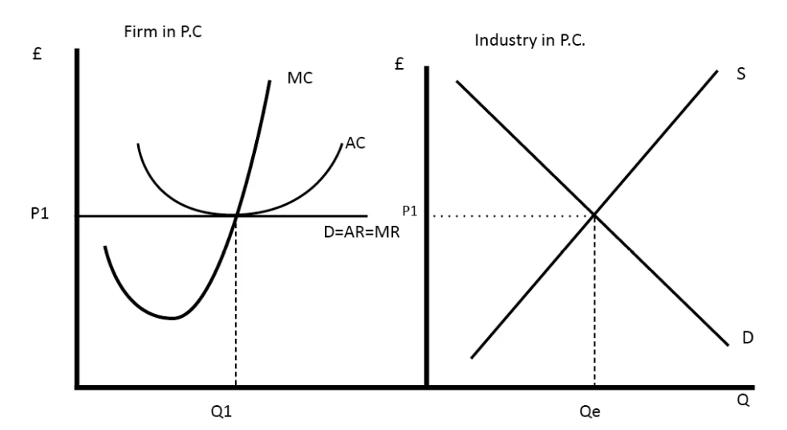
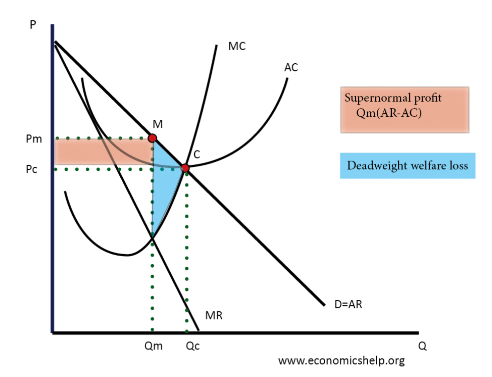
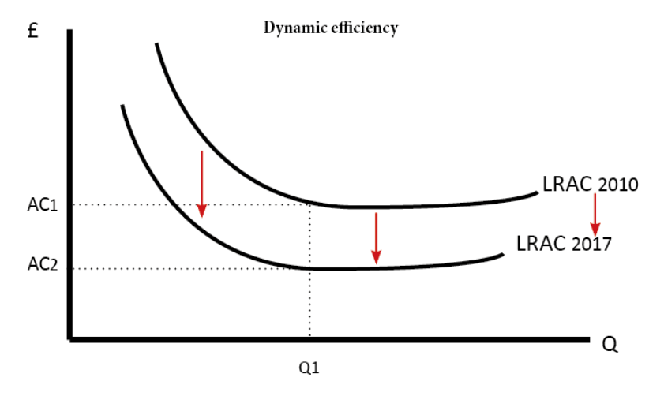
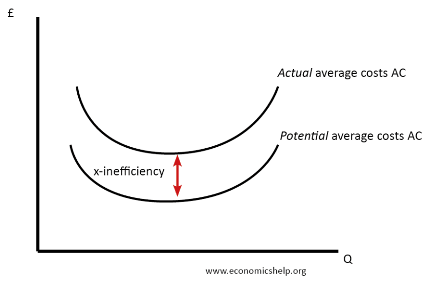
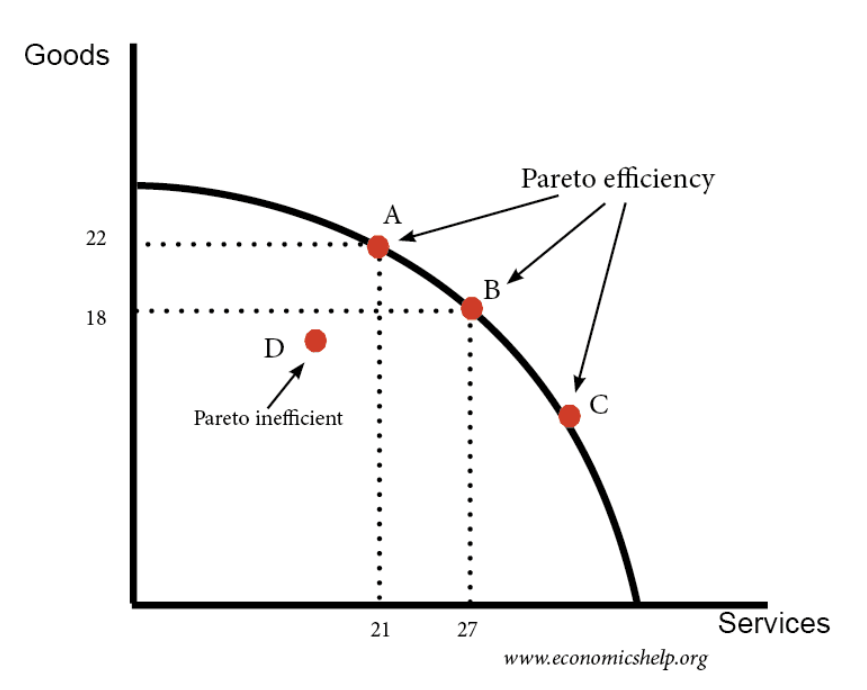

The basic concept of economic efficiency stems from the fundemental economic problem. Economic efficiency is acheived when the greatest
possible level of infinite wants is being met with those scarce resources; it represents the best possible solution to the fundamental
economic problem.
For example, in agriculture it is the maximum crop yields from farming a given area of land.
Economic efficiency consists of Productive efficiency and Allocative efficiency
When both productive and allocated efficiency co-exist, economic efficiency is achieved. At the global level, economic efficiency is
achieved when economies are using all of the world's resources in the best possible way. However, the use of protectionist trade policies shows
that global efficiency is not being achieved.
Productive Efficiency

Productive efficiency is concerned with producing goods and services with the optimal combination of inputs to produce maximum
output for the minimum cost.
For example, when a car assembly plant is using the latest technolgy, minimising the cost of producing each vehicle.
To be productively efficient means the economy must be producing on its production possibility curve.
Points A and B are productively efficient.
Point D is inefficient because you could produce more goods or services with no opportunity cost
Point C is currently impossible.

A firm is also said to be productively efficient when it is producing at the lowest point on the short run average cost curve
(where MC meets AC).
Note: MC = marginal cost, AC = average cost, Q = quantity
A competitive market can lead to the necessary conditions for productive efficiency. Firms have the incentive of profit to make their
products at the lowest possible cost: the lower the cost, the greater the profit. A failure to produce at the lowest possible cost in a
competitive market may lead to bankruptcy for a firm as their rivals are able to set their prices much lower.
Productive efficiency is closely related to the concept of technical efficiency. A firm is technically efficient when it combines the
optimal combination of labour and capital to produce a good. i.e. cannot produce more of a good, without more inputs.
An economy can be productively efficient but have very poor allocative efficiency. Allocative efficiency is concerned with the optimal
distribution of resources. For example, if you devoted 90% of GDP to defence, you could be productively efficient, but, this would be a
very unbalanced economy.
Allocative Efficiency
Allocative efficiency gives consumers maximum satisfaction at their current level of income. This occurs when firms produce the
combination of goods and services that are most wanted by consumers.
The price that consumers are willing to pay represents their preferences and the benefits they derive from consumption.
(It can also be said that price = marginal utility.)
The marginal cost (cost of producing one more unit of that good) is a measure of opportunity cost of the resources
used to produce the last unit.
So, the point where the price equals to the marginal cost is where resources are efficiently allocated.
Consumers are prepared to pay what it costs to produce the last unit. This implies that there is no waste and both producers and
consumers are satisfied with what is produced
A competitive market can lead to allocative efficiency. First, the need to make the greatest possible profit pushes firms to produce goods that consumers
most desire relative to their cost of production. If firms do not produce these goods, other firms will step in and do so. A failure to produce such goods will
therefore force some firms to close.

Perfect Competition
Firms in perfect competition are said to produce at an allocative efficient level because at Q1, P = MC

Monopoly
Monopolies can increase price above the marginal cost of production and are allocatively inefficient. This is because monopolies have market power
and can increase price to reduce consumer surplus.
Monopoly sets a price of Pm. This is allocatively inefficient because at this output of Qm, price is greater than MC
Allocative efficiency would occur at the point where the MC cuts the Demand curve or where P = MC
The area of deadweight welfare loss shows the degree of allocative inefficiency in the economy
Allocative and Productive efficiency
Productive Efficiency is concerned with producing goods at the lowest cost, which occurs on the PPC. However, producing on the PCC is not necessarily
allocatively efficient because a PPC only shows the potential output. Unlike productive efficiency, it is not possible to show allocative efficiency on the
PPC. Allocative efficiency is concerned with the distribution of goods and requires indifference curves.
Other Efficiencies
Dynamic Efficiency
A form of productive efficiency that benefits a firm over time.
A firm which is dynamically efficient will be reducing its cost curves by implementing new production processes. By using their excess profits, firms are able
to invest in research, developement and product innovation. Dynamic efficiency is concerned with the optimal rate of innovation and investment to improve
production processes which help to reduce the long-run average cost curves.

Dynamic efficiency is a long-run concept.
Since it requires investment sourced from within or outside the firm. Initially, this invesment can result
in higher costs; the payback comes later. If a firm does not invest, it may become less efficient and may be forced to leave the market
Where a firm is dynamically efficient, its long-run average cost curve (LRAC) shifts downwards as shown in the diagram.
Factors that affect Dynamic Efficiency
Investment – investment in new technology and improved capital can enable lower costs in future
State of technology - the rapid development of technology can enable firms to produce more for lower costs
The motivation of workers and managers – do managers have incentives to take risks/innovate or does the structure of the firm encourage
stagnant development?
Access to finance - a firm without access to finance will struggle to invest in new capital which will enable lower costs
X Efficiency
X Efficiency would occur be when competitive pressures cause firms to combine the optimum combination of factors of production and produce on the lowest possible average cost curve
X Inefficiency occurs when a firm lacks the incentive to control costs. This causes the average cost of production to be higher than necessary.
When there is this lack of incentives, the firm will not be technically efficient.

In theory, the firm could have an average cost curve at “Potential AC” but due to organisational slack, it’s actual average costs are higher.
The difference between the actual costs and the potential costs is the x inefficiency.
Causes of X Inefficiency
Monopoly Power - a monopoly faces little or no competition. Therefore, it might be easy for the monopolist to make supernormal profits. Therefore, in
the absence of competitive pressures, they may not try very hard to control costs.
State Control - a firm owned by the government may have little or no incentive to make a profit. Therefore, it has less incentive to cut costs.
Principal-agent problem - shareholders may wish to maximise profits and minimise costs. But, managers and workers may pursue other objectives such as keeping
costs low enough to protect their job but then high enough as it makes work more enjoyable.
Lack of motivation - workers/managers may simply lack the necessary motivation to work hard
Why Economic Efficiency Matters
Increases output, productivity and leads to higher economic growth
Enables people to have better living standards, lower prices and afford more goods
Reduces waste and makes use of scarce resources in a better way
Allows governments to provide more public services with the same resources
HOWEVER: Efficiency does not always equal equity. A highly efficient allocation may still be unequal or politically unacceptable,
e.g. sacking workers, closing down coal mines, may lead to structural unemployment
Pareto Optimality
Pareto optimality represents the best possible situation in the circumstances, with resources allocated in the most efficient way.
This occurs when it is impossible to make someone better off without making someone worse off.
This concept can be simply applied using a PPC.

When an economy is operating on its PPC, it is in the state of Pareto optimality as it is not possible to increase the output
of goods without reducing the output of services.
In contrast, any point within the PPC, for example D, would be Pareto inefficient because it is possible to increase the output
of either goods or services without reducing the output of the other.
If the allocation of resources is not Pareto efficient, then there is opportunity for improvement.
A Pareto improvement is said to occur when at least one individual becomes better off without anyone becoming worse off.
Pareto efficiency is related to the concept of productive efficiency. Productive efficiency is concerned with the optimal production of
goods which occurs on a PPC.
Pareto efficiency is also related to allocative efficiency. To be Pareto efficient the distribution of resources needs to be at a point
where it is impossible to make someone better off without making someone worse off.
An outcome may be seen as a Pareto improvement, but, it doesn’t mean this is a satisfactory outcome or fair. There could still be
inequality after a Pareto improvement.
Market Failure
Market Failure occurs when there is an inefficient allocation of scarce resources in a free market.
Market failure arises because the free market mechanism is not always efficient in which resources are allocated.
There are various consequences of market failures that will be covered in the following chapters:
Externalities in the market
Provision of merit and demerit goods – People underestimate the benefit or cost of good
Provision of public and quasi-public goods
Information failure – where there is a lack of information to make an informed choice
Adverse selection or moral hazard - when individuals have incentive to change their behaviour when others take the risk
Abuse of monopoly power in the market - a firm controls the market (with high market share) and can set higher prices.
Key Terms
Economic Efficiency: where scarce resources are used in the most efficient way to produce maximum output
Productive Efficiency: when a firm is producing at the lowest possible cost
Allocative Efficiency: where price is equal to marginal cost; firms are producing goods/services most wanted by consumers
Marginal Cost: the addition to total cost when making one extra unit of output
Dynamic Efficiency: when resources are allocated efficiently overtime
Pareto Optimality: where it is impossible to make someone better off without making someone else worse off